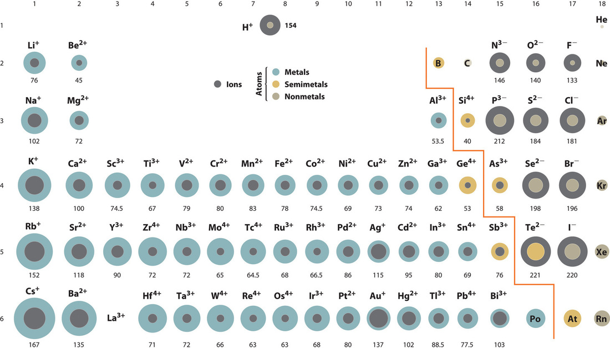
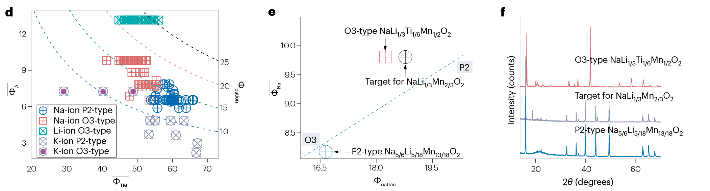
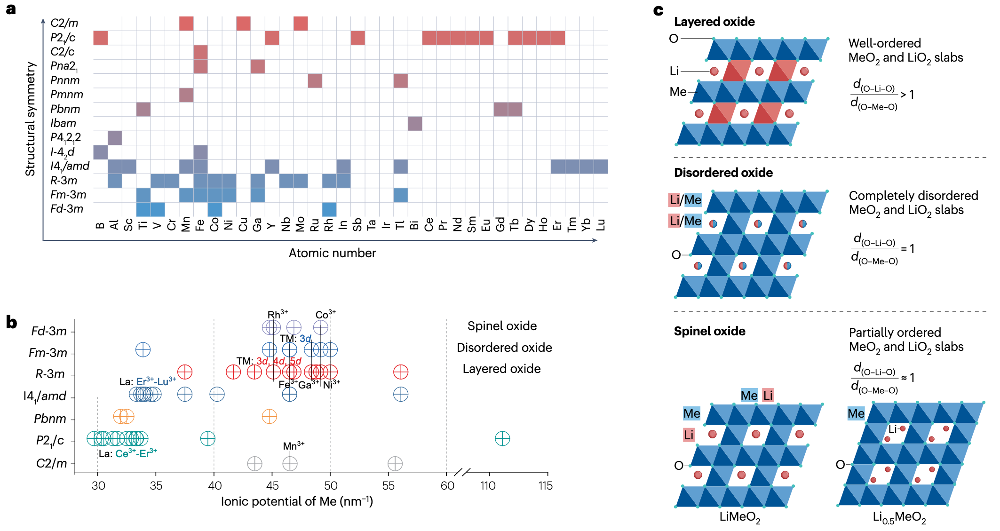
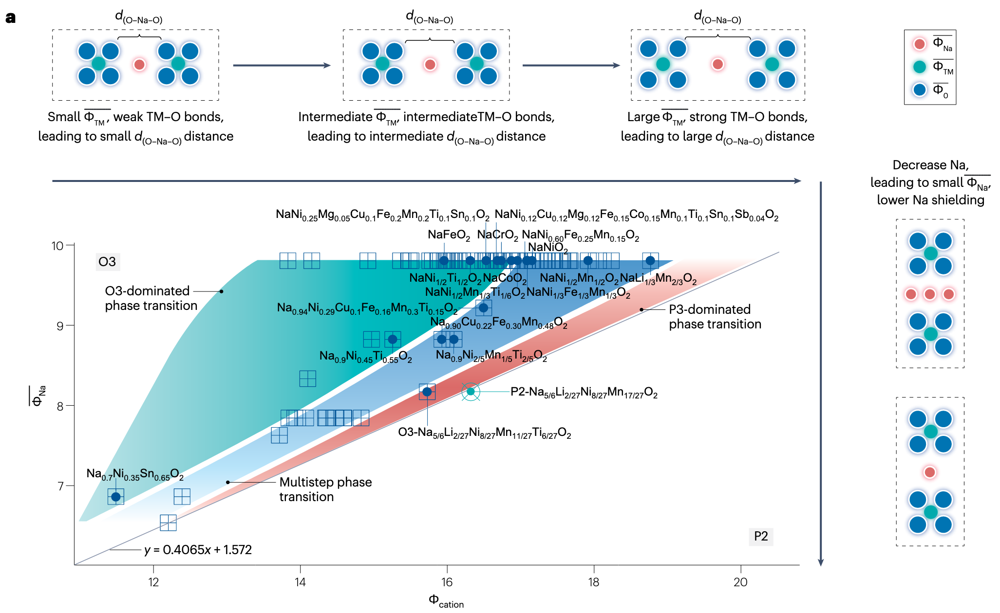
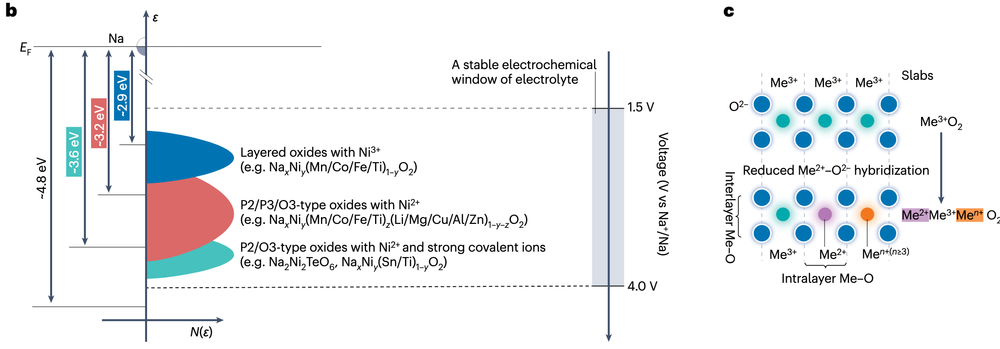

# Background
电池材料的开发受到材料组成、结构、性质之间复杂关系的约束。因此需要研究离子级别的相互作用，以及对电池性质的影响。
# Preliminaries
# 锂电池材料的通用表示
大多数锂电池材料可以表示为 A-Me-X 或者 A-Me-BX 形式。其中 A 表示 Li+, Na+, K+ 等。Me 表示金属阳离子，X 表示阴离子，BX 表示聚合阴离子基团 (polyanion groups). 比如 Li-Co-O2, Li3-PS4 等。
此时，发现定义 A 和 X (BX) 的数量比具有意义：
- 比值小于 2 时，材料一般用作电极材料。因为此时的金属阳离子 Me 和阴离子 X (BX) 形成了良好的框架，可以供锂离子嵌入或脱嵌，从而使得电极在充放电过程中更加稳定。
- 比值大于 2 时，材料一般用作电解质。因为此时阴离子大多是高电荷的聚合阴离子，会相互产生强斥力形成孤立的结构基团，从而促进了离子通路的形成。
下图说明了这一点。
# 离子电势
离子电势 (Ionic Potential) 定义为离子电荷与离子半径的比值，可以用来衡量材料结构内相互作用的强度。
进行这一定义的主要原因是，离子半径是进行材料设计时微观考虑的首要因素。但是同一元素的离子半径是伴随所携带电荷而发生强烈变化的，如下图所示。
# 设计电池材料的晶体结构
# 电极材料
电极材料以氧化物材料作为例子进行分析。
# 分层过渡金属氧化物的结构类型
离子半径的变化规律
防止你忘掉初中学过的离子半径变化规律，列在下面（按重要级排序）：
- 电子层数越多，离子半径越大
- 电子层数相同时，质子数越多，对外层电子的吸引能力越强，半径越小
比如 Li+ 的半径是 76 pm, Be2+ 的半径是 45 pm, N5+ 的半径是 13 pm, 但是 N3- 的半径是 146 pm, O2- 的半径是 140 pm. 另外，Na+ 的半径是 102 pm, K+ 的半径是 138 pm.
所以锂、钠离子的半径远小于氧离子的半径。在碱金属与过渡金属氧化物中，锂、钠离子填充在氧离子组成的空隙中。

分层过渡金属氧化物是常见的电池正极材料，比如 LiCoO2. 这类材料按照几何结构可以进行划分。通过氧原子层的堆积方式，可以划分为
- P2 (Prismatic): 周期为 2 的三棱柱型。
- O3 (Octahedral): 周期为 3 的八面体型。
- T (Tetragonal): 四面体型，似乎仅理论存在。（？）
Structural classification and properties of the layered oxides. Delmas et al. 1980. Physica B+C.
在分层过渡金属氧化物中，主要的结构是 P2 和 O3. 下图 a 和 b 展示了两种视角下的结构特点。可以看到，P2 结构中氧离子层的间距更大，更容易让锂离子通过。但是基于图 c 可以看出，锂离子大多为 O3 结构。
但是，结构不仅仅依赖于碱金属离子和氧离子的半径之比，也依赖于过渡金属离子的半径，也就是 TM 项。现在，通过将 TM 进行替换，可以生成许多 P2 或 O3 类型的材料。
# 电极材料的离子势
| 符号 | 公式 | 含义 |
|---|---|---|
| 碱金属离子的加权平均离子势 | ||
| 过渡金属 (TM) 离子的加权平均离子势 | ||
| 阳离子加权平均离子势 | ||
| - | 阴离子加权平均离子势 |
这里讨论的是氧化物晶体，因此这里的 就是氧的离子势，是一个常量。
利用该度量方式，可以对分层金属氧化物的结构进行预测，如下图所示：

这里 越大，对应碱金属离子半径越小，越容易形成 O3 结构。这里引入 . 当 越大时，材料越容易形成 O3 结构。因此要尽可能降低 的大小，对应减小过渡金属离子的离子势 .
e, f 两图是对一种新的预测材料的验证。
# 电解质材料
电解质材料以卤化物材料作为例子进行分析。
# 结构类型
卤化物电解质包括三种重要的框架类型：
- 单斜晶系 (monoclinic， C2/m), 立方密堆积 (CCP)
- 三方晶系 (trigonal, P-3m1), 六方密堆积 (HCP)
- 正交晶系 (orthorhombic, Pnma), 六方密堆积 (HCP)
通常密堆积的类型使用金属离子的加权平均半径 和阴离子半径 的比值 来描述。但是这个比值不能区分上述三种框架。因为仅通过离子半径不能反映金属离子的电荷，而金属离子的电荷对对离子相互作用和结构稳定性存在较强的影响。单斜晶系具有较强的静电排斥力，对应更高的离子电导率。
不同于其它主要通过共价键影响结构的固态电解质，卤化物电解质主要通过离子键影响结构，尤其是 Me-X 离子键（因为 Me 和 X 的半径最大）。
# 卤化物电解质的离子势
于是，可以使用 Me 和 X 的离子势比值
来刻画卤化物电解质的结构。因为过渡金属和碱金属在化学式配方中处于竞争关系（加权求和是定值），因此使用 和 作为坐标轴进行可视化，可以观察到明显的现象。
有趣的是，为什么这里的分界线恰好是一条直线呢？因为 是近似为常数的（只选用了 Cl- 和 Br- 两种阴离子，且主要以 Cl- 为主）。所以 实际上就是 乘了一个常数。然后 和 量纲一致，因此只能呈线性关系。
那这个比值有什么用呢？
嗯，于是进一步分析，得到了上面图 c 对电解质设计的指导。这里的图 c 坐标轴有点乱，其横轴表示增加 或者降低 , 纵轴代表降低 .
- 沿横轴看，增高 或降低 会使得 增大，增强 Me-X 相互作用，从而降低 Li-X 相互作用，让阴离子层之间具有更大的空隙，有利于锂离子通过。
- 如果 更高，则具有更高的离子屏蔽效应，同时会吸引阴离子，阻碍锂离子传输。
离子屏蔽效应 (ion shielding effect) 对离子电导率具有显著的影响。存在外部电场作用时，离子屏蔽会使得迁移离子收到的外部电场力变小，从而阻碍离子迁移。
目前存在多种方式来改善离子屏蔽效应。如通过掺杂的方式来改变晶体结构（晶体堆积方式）或者引入缺陷破坏离子屏蔽等。
# 发现新的电池材料
充放电过程中发生的结构相变，会严重影响电池的整体性能。
一般来说，氧化物包括三种重要的晶体结构类型：
- 尖晶石结构 (spinel, Fd-3m): 容易形成三维离子扩散通道，热稳定性优异，比容量低 —— 多用作电解质，如 LLZO 体系。
- 无序结构 (disordered, Fm-3m): 理论比容量大，具有较大的随机性，性质不稳定 —— 正在探索。
- 层状结构 (layered, R-3m): 高比容量，容易形成二维离子扩散通道，稳定性差 —— 多用作正极，如 LiCoO2.

c 图展示了不同的键长所对应的晶体结构。
# 预测电池材料的电化学性质
# 相变性质

这里的 a 图其实和刚才的图差不多，都是描述离子势如何影响键长，从而影响晶体结构的。
# 氧化还原性质

图 b 为钠离子层状正极的电极电位与 Ni 离子氧化还原对的关联。主要展示了几点影响因素：
- Ni 离子本身的价态：如 Ni2+ 比 Ni3+ 价态低，更容易被氧化。
- 共存离子的影响：共存离子的 越大，对 Ni 离子的电子的静电吸引越强，对应越高的氧化还原电位。
- 晶体结构的影响：结构差异改变离子配位数和键长，从而通过空间位阻效应影响电子状态。
图 c 是精细解释周围离子的离子势对氧化还原反映电位影响的图示。对应前面 “共存离子的影响”。具体来说：
- 周围离子的离子势越大，越容易吸引过渡金属的电子，从而更难发生氧化反应。
- 越大，TM-O 结合越紧密，更容易发生氧化还原反应。
- 层间距（晶体结构）也会影响氧化还原反应。